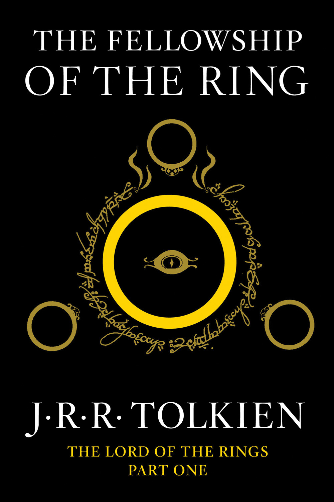

The Fellowship of the Ring (Book 1)
Synopsis
The armies of the Dark Lord Sauron are massing as his evil shadow spreads ever wider. Men, Dwarves, Elves and Ents unite forces to do battle agains the Dark. Meanwhile, Frodo and Sam struggle further into Mordor in their heroic quest to destroy the One Ring.
Download PDF- 01 - A Long-Expected Party
- 02 - The Shadow of the Past
- 03 - Three Is Company
- 04 - A Shortcut to Mushrooms
- 05 - A Conspiracy Unmasked
- 06 - The Old Forest
- 07 - In The House of Tom Bombadil
- 08 - Fog on the Barrow Downs
- 09 - At the Sign of the Prancing Pony
- 10 - Strider
- 11 - A Knife in the Dark
- 12 - Flight to the Ford
- 13 - Many Meetings
- 14 - The Council of Elrond
- 15 - The Ring Goes South
- 16 - A Journey In The Dark
- 17 - The Bridge of Khazad-Dum
- 18 - Lothlorien
- 19 - Mirror of Galadriel
- 20 - Farewell to Lorien
- 21 - The Great River
- 22 - The Breaking of the Fellowship